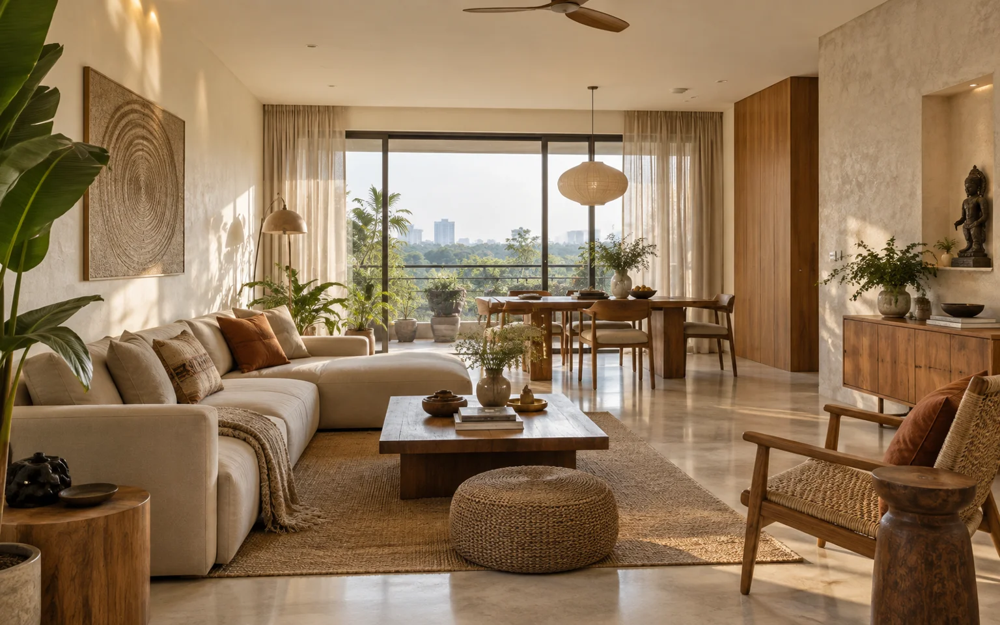

Use storage to organise
A continuous joinery line suggests where different activities belong while keeping the space visually connected.
Fewer interruptions, better use of the light already there.

The brief
This apartment study starts with the everyday problem of a living space doing several jobs. The intention is to give reading, dining and conversation their own place without dividing the room into smaller boxes.
Three decisions
A continuous joinery line suggests where different activities belong while keeping the space visually connected.
Lower furniture close to daylight preserves the view through the room. Taller storage belongs where it does not block the light.
Timber, fabric and pale walls give the room contrast through texture. Decoration can then change without changing the whole interior.